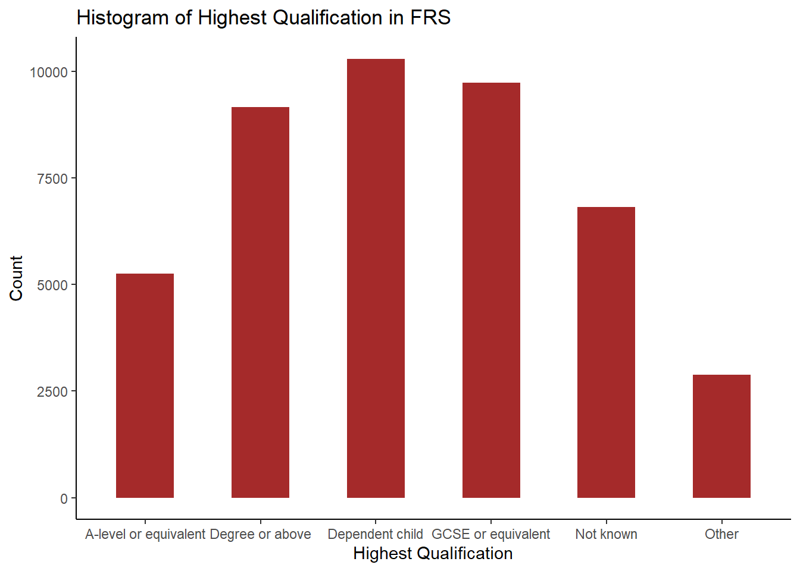
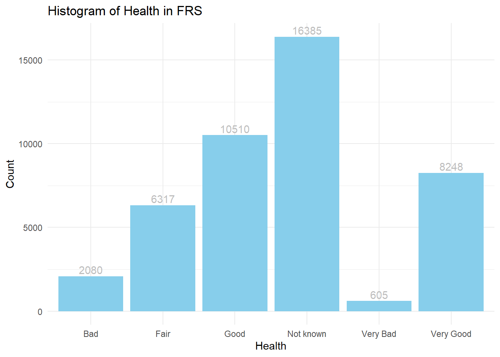
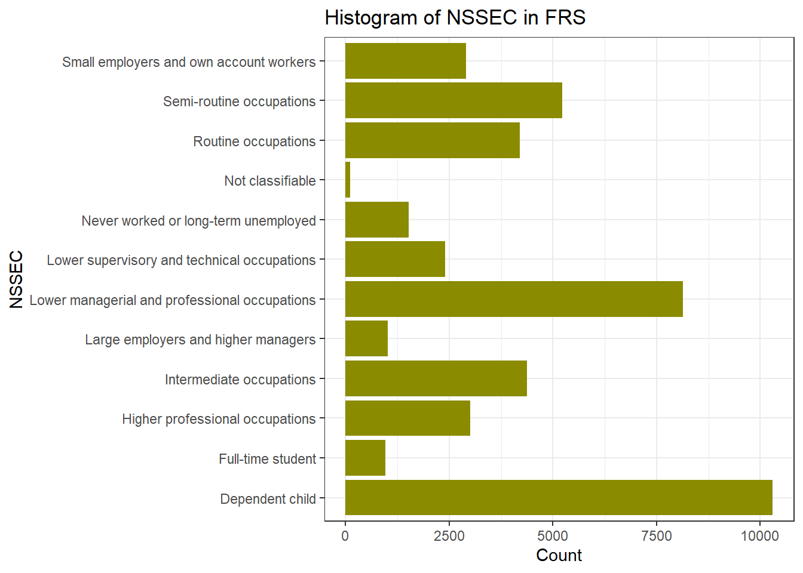

# Load necessary libraries
library(ggplot2)
library(dplyr) 3 Correlation and Multiple Linear Regression with Qualitative Variables
Last week:
Multiple Linear Regression (MLR) is a statistical method that models the relationship between a dependent variable and two or more independent variables, allowing researchers to examine how various predictors jointly influence an outcome.
model <- lm(pct_Very_bad_health ~ pct_No_qualifications + pct_Males + pct_Higher_manager_prof, data = census)
summary(model)
In a regression model, independent/predictor variables could be continuous or categorical (or qualitative). While continuous variables capture quantitative effects, categorical variables provide insights into differences across groups. When we say categorical variables, we normally mean:
Nominal Data: categorical data without natural order. E.g. Gender, Colour, Country…
Ordinal Data: categorical data with a meaningful order. E.g. Education level, Customer satisfaction, Grade…
By blending continuous and categorical predictors, MLR with categorical variables enhances the model’s ability to reflect real-world complexities and improves interpretability, as it allows analysts to assess how each category or group within a independent variable influences the dependent variable.
For most categorical (especially the nominal) variables, they cannot be included in the regression model directly as a continuous independent variable. Instead, these qualitative independent variables should be included in regression models by using the dummy variable approach, transforming categorical information into a numerical format suitable for regression analysis.
However, R provides a powerful way, by automatively handling with such process when the categorical variable is designated as a factor and to be included in the regression model. This makes it much easier for you to use categorical variables in the regression model to assess the effects of categorical groupings on the dependent variable alongside continuous predictors.
Learning Objectives:
In this week’s practical we are going to
Analysis of categorical/qualitative variables
Estimate and interpret a multiple linear regression model with categorical variables
Make predictions using a regression model
3.1 Analysis categorical variables
Recall in Week 7, you get familiar to R by using the Family Resource Survey data. Today we will keep explore the data by using its categorical variables. As usual we first load the necessary libraries.
3.1.1 Data overview
#or use tidyverse which includes ggplot2, dplyr and other foundamental libraries, remember you need first install the package if you haven’t by using install.packages(“tidyverse”)
library(tidyverse)Exactly as you did in previous weeks, we first load in the dataset:
frs_data <- read.csv("../data/FamilyResourceSurvey/FRS16-17_labels.csv")Recall in previous weeks, we used the following code to overview the dataset. Familiar yourself again by using them:
View(frs_data)
glimpse(frs_data)and also summary() to produce summaries of each variable
summary(frs_data)You may notice that for the numeric variables such as hh_income_gross (household gross income) and work_hours(worked hours per week), the summary() offers useful descriptive statistics. While for the qualitative information, such as age_group (age group), highest_qual (Highest educational qualification), marital_status (Marital status) and nssec (Socio-economic status), the summary() function is not that useful by providing mean or median values.
Performing descriptive analysis for categorical variables or qualitative variables, we focus on summarising the frequency and distribution of categories within the variable. This analysis helps understand the composition and diversity of categories in the data, which is especially useful for identifying patterns, common categories, or potential data imbalances.
# Frequency count
table(frs_data$age_group)
0-4 05-10 11-15 16-19 20-24 25-29 30-34 35-39 40-44 45-49 50-54 55-59 60-64
2914 3575 2599 1858 1929 2353 2800 2840 2790 2883 2975 2767 2775
65-69 70-74 75+
2990 2354 3743 table(frs_data$highest_qual)
A-level or equivalent Degree or above Dependent child
5260 9156 10298
GCSE or equivalent Not known Other
9729 6820 2882 table(frs_data$marital_status)
Cohabiting Divorced/civil partnership dissolved
4015 2199
Married/Civil partnership Separated
18195 747
Single Widowed
16663 2326 table(frs_data$nssec)
Dependent child
10299
Full-time student
963
Higher professional occupations
3004
Intermediate occupations
4372
Large employers and higher managers
1025
Lower managerial and professional occupations
8129
Lower supervisory and technical occupations
2400
Never worked or long-term unemployed
1516
Not classifiable
107
Routine occupations
4205
Semi-routine occupations
5226
Small employers and own account workers
2899 By using ggplot2, it is easy to create some nice descriptive charts for the categorical variables, such like what you did for the continuous variables last week.
ggplot(frs_data, aes(x = highest_qual)) +
geom_bar(fill="brown",width=0.5) +
labs(title = "Histogram of Highest Qualification in FRS", x = "Highest Qualification", y = "Count")+#set text info
theme_classic()#choose theme type, try theme_bw(), theme_minimal() see differences
ggplot(frs_data, aes(x = health)) +
geom_bar(fill="skyblue") +
geom_text(stat = "count", aes(label = ..count..),vjust = -0.3,colour = "grey")+ #add text
labs(title = "Histogram of Health in FRS", x = "Health", y = "Count")+#set text info
theme_minimal()
ggplot(frs_data, aes(x = nssec)) +
geom_bar(fill = "yellow4") +
labs(title = "Histogram of NSSEC in FRS", x = "NSSEC", y = "Count") +
coord_flip()+ #Flip the Axes, add a # in front of this line, to make the code in gray and you will see why we would better flip the axes at here
theme_bw() 
You can change the variables in ggplot() to make your own histogram chart for the variables you are interested in. You will learn more of visualisation methods in Week11’s practical.
3.1.2 Correlation
Q1. Which of the associations do you think is strongest? Which is the weakest?
As before, rather than relying upon an impressionistic view of the strength of the association between two variables, we can measure that association by calculating the relevant correlation coefficient.
To calculate the correlation between categorical data, we first use Chi-squared test to assess the independence between pairs of categorical variables, then we use Cramer’s V to measures the strength of association - the correlation coefficents in R.
Pearson’s chi-squared test (χ2) is a statistical test applied to sets of categorical data to evaluate how likely it is that any observed difference between the sets arose by chance. If the p-value is low (typically < 0.05), it suggests a significant association between the two variables.
chisq.test(frs_data$health,frs_data$happy) Warning in chisq.test(frs_data$health, frs_data$happy): Chi-squared
approximation may be incorrect
Pearson's Chi-squared test
data: frs_data$health and frs_data$happy
X-squared = 45594, df = 60, p-value < 2.2e-16If you see a warning message of Chi-squared approximation may be incorrect. This is because some expected frequencies in one or more cells of the cross-tabular (health * happy) are too low. The df means degrees of freedom and it related to the size of the table and the number of categories in each variable. The most important message from the output is the estimated p-value, which shows as p-value < 2.2e-16 (2.2 with 16 decimals move to the left, it is a very small number so written in scientific notation). P-value of the chi-squared test is far smaller than 0.05, so we can say the correlation is statistically significant.
Cramér’s V is a measure of association for categorical (nominal or ordinal) data. It ranges from 0 (no association) to 1 (strong association). The main downside of using Cramer’s V is that no information is provided on whether the correlation is positive or negative. This is not a problem if the variable pair includes a nominal variable but represents an information loss if the both variables being correlated are ordinal.
# Install the 'vcd' package if not installed
if(!require("vcd"))
install.packages("vcd", repos = "https://cran.r-project.org")Loading required package: vcdWarning: package 'vcd' was built under R version 4.4.2Loading required package: gridlibrary(vcd)
# Calculate Cramér's V
assocstats(table(frs_data$health, frs_data$happy)) X^2 df P(> X^2)
Likelihood Ratio 54036 60 0
Pearson 45594 60 0
Phi-Coefficient : NA
Contingency Coeff.: 0.713
Cramer's V : 0.454 Research Question 1. Which of our selected person-level variables is most strongly correlated with an individual’s health status?
Use the codes of Chi-test and Cramer’s V to answer this question by completing Table 1.
Table 1 Person-level correlations with health status
| Covariates | Correlation Coefficient | Statistical Significance | |
| Cramer’s V | p-value | ||
| health | age_group | ||
| Health | highest_qual | ||
| health | marital_status | ||
| Health | nssec |
3.2 Implementing a linear regression model with a qualitative independent variable
Research Question 2: How does health vary across regions in the UK?
The practical is split into two main parts. The first focuses on implementing a linear regression model with a qualitative independent variable. Note that you need first to set the reference category (baseline) as the outcomes of the model reflects the differences between categories with the baseline. The second part focuses prediction based the estimated linear regression model.
First we load the UK district-level census dataset.
# load data
LAcensus <- read.csv("../data/Census2011/UK_DistrictPercentages.csv") # Local authority levelUsing the district-level census dataset “UK_DistrictPercentages.csv”. the variable “Region” (labelled as Government Office Region) is used to explore regional inequality in health.
Familiar yourself with the dataset by using the same codes as last week:
#view the data
View(LAcensus)
glimpse(LAcensus)The names() function returns all the column names.
names(df)The dim() function can merely returns the number of rows and number of columns.
dim(LAcensus) [1] 406 128There are 406 rows and 130 columns in the dataset. It would be very hard to scan throught the data if we use so many variables altogether. Therefore, we can select several columns to tailor for this practical. You can of course include other variables you are interested in also by their names:
df <- LAcensus %>% select(c("pct_Long_term_ill",
"pct_No_qualifications",
"pct_Males",
"pct_Higher_manager_prof",
"Region"))Simply descriptive of this new data
summary(df) pct_Long_term_ill pct_No_qualifications pct_Males
Min. :11.20 Min. : 6.721 Min. :47.49
1st Qu.:15.57 1st Qu.:19.406 1st Qu.:48.67
Median :18.41 Median :23.056 Median :49.09
Mean :18.27 Mean :23.257 Mean :49.10
3rd Qu.:20.72 3rd Qu.:26.993 3rd Qu.:49.48
Max. :27.97 Max. :40.522 Max. :55.47
pct_Higher_manager_prof Region
Min. : 4.006 Min. : 1.000
1st Qu.: 7.664 1st Qu.: 3.000
Median : 9.969 Median : 6.000
Mean :10.747 Mean : 6.034
3rd Qu.:12.986 3rd Qu.: 8.000
Max. :37.022 Max. :12.000 Now we can retrieve the “Region” column from the data frame by simply use df$Region. But what if we want to understand the data better, like the following questions?
Q2. How many categories do the variable “Region” entail? How many local authority districts does each region include?
Simply use the function table() would return you the answer.
table(df$Region)
1 2 3 4 5 6 7 8 9 10 11 12
40 47 33 12 39 67 37 30 21 22 32 26 The numbers in Region column indicate different regions in the UK - 1: East Midlands; 2: East of England; 3: London; 4: North East; 5: North West; 6: South East; 7: South West; 8: West Midlands; 9: Yorkshire and the Humber; 10: Wales; 11: Scotland; and 12: Northern Ireland.
The table() function tells us that this data frame contains 12 regions, and the number of LAs belongs to each region.
Now, for better interpration of our regions with their real name rather than the code, we can create a new column named “Region_label” by using the following code. **R can only include the categorical variables in the factor type, so we set the new column Region_label in factor()
df$Region_label <- factor(df$Region,c(1:12),labels=c("East Midlands",
"East of England",
"London",
"North East",
"North West",
"South East",
"South West",
"West Midlands",
"Yorkshire and the Humber",
"Wales",
"Scotland",
"Northern Ireland")) If you re-run the table() function, the output is now more readable:
table(df$Region_label)
East Midlands East of England London
40 47 33
North East North West South East
12 39 67
South West West Midlands Yorkshire and the Humber
37 30 21
Wales Scotland Northern Ireland
22 32 26 3.2.1 Include the categorical variables into a regression model
We will continue with a very similar regression model fitted in last week that relates Percentages long-term illness (pct_Long_term_ill) to Percentages no-qualification (pct_No_qualifications), Percentage Males (pct_Males) and Percentages Higher Managerial or Professional occupation (pct_Higher_manager_prof).
Decide which region to be set as the baseline category. The principle is that if you want to compare the (average) long term illness outcome of Region A to those of other regions, Region A should be chosen as the baseline category. For example, if you want to compare the (average) long term illness outcome of London to rest of regions in the UK, London should be selected as the baseline category.
Implement the regression model with the newly created categorical variables - Region_label in our case. R will automatically handle the qualitative variable as dummy variables so you don’t need to concern any of that. But you need to let R knows which category of your qualitative variable is your reference category or the baseline. Here we will use London as our first go. Note: We choose London as the baseline category so the London region will be excluded in the independent variable list.
Therefore, first, we set London as the reference:
df$Region_label <- relevel(df$Region_label, ref = "London")Similar to last week, we build our linear regression model, but also include the Region_label variable into the model.
model <- lm(pct_Long_term_ill ~ pct_Males + pct_No_qualifications + pct_Higher_manager_prof + Region_label, data = df)
summary(model)
Call:
lm(formula = pct_Long_term_ill ~ pct_Males + pct_No_qualifications +
pct_Higher_manager_prof + Region_label, data = df)
Residuals:
Min 1Q Median 3Q Max
-3.2963 -0.9090 -0.1266 0.8168 5.2821
Coefficients:
Estimate Std. Error t value Pr(>|t|)
(Intercept) 41.54134 5.22181 7.955 1.95e-14 ***
pct_Males -0.75756 0.10094 -7.505 4.18e-13 ***
pct_No_qualifications 0.50573 0.03062 16.515 < 2e-16 ***
pct_Higher_manager_prof 0.08910 0.03674 2.426 0.01574 *
Region_labelEast Midlands 1.14167 0.35015 3.260 0.00121 **
Region_labelEast of England -0.01113 0.33140 -0.034 0.97322
Region_labelNorth East 2.70447 0.49879 5.422 1.03e-07 ***
Region_labelNorth West 2.64240 0.35468 7.450 6.03e-13 ***
Region_labelSouth East 0.48327 0.30181 1.601 0.11013
Region_labelSouth West 2.62729 0.34572 7.600 2.22e-13 ***
Region_labelWest Midlands 0.91064 0.37958 2.399 0.01690 *
Region_labelYorkshire and the Humber 1.03930 0.41050 2.532 0.01174 *
Region_labelWales 4.63424 0.41368 11.202 < 2e-16 ***
Region_labelScotland 0.46291 0.38916 1.189 0.23497
Region_labelNorthern Ireland 0.55722 0.42215 1.320 0.18762
---
Signif. codes: 0 '***' 0.001 '**' 0.01 '*' 0.05 '.' 0.1 ' ' 1
Residual standard error: 1.394 on 391 degrees of freedom
Multiple R-squared: 0.8298, Adjusted R-squared: 0.8237
F-statistic: 136.2 on 14 and 391 DF, p-value: < 2.2e-16You have already learnt how to interpret the output of regression model last week: Significance (p-value), Coefficient Estimates, and Model fit (R squared and Adjusted R-squared).
Q3. Relating back to this week’s lecture notes, indicate what regions have statistically significant differences in the percentage of long-term illness, compared to London?
First, the Significance and the Coefficient Estimates. By examining the P-value, which is the last column in the output table, we can see that most of the independent variables are significant predictor of pct_Long_term_ill.
Similarly to last week, we learn that the changes in
pct_No_qualificationsandpct_Malesare significantly associated with changes inpct_Long_term_illat the <0.001 level (with the three asterisks *** ), which is actually an indicator of highly statistically significant, while we are less confident that the observed relationship betweenpct_Higher_manager_profandpct_Long_term_illare statistically significant (with the two asterisks **). Through their coefficient estimates, we learn that:The association of
pct_Malesis negative and strong: each decrease in 1% ofpct_Malesis associated with an increase of 0.75% of long term illness rate in the population of UK.The association of
pct_No_qualificationsis positive and strong: each increase in 1% ofpct_No_qualificationsis associated with an increase of 0.5% of long term illness rate.The association of
pct_Higher_manager_profis positive but weak: each increase in 1% ofpct_Higher_manager_profis associated with an increase of 0.08% ofpct_Long_term_ill.
Now comes to the dummy variables (all the items starts with Region_label) created by R for our qualitative variable Region_label:
Region_labelNorth East,Region_labelNorth West,Region_labelSouth WestandRegion_labelWalesare also statistically significant at the <0.001 level. The changes inRegion_labelEast Midlandsare significantly associated with changes inpct_Long_term_illat the 0.001 level, while the changes inRegion_labelWest MidlandsandRegion_labelYorkshire and the Humberare significantly associated with changes inpct_Long_term_illat the 0.01 level. The 0.01 level suggests that it is a mild likelihood that the relationship between these independent variables and the dependent variable is not due to random change. They are just mildly statistically significant.The coefficient estimates of them need to be interpreted by comparing to the reference category London. The Estimate column tells us: North East region is associated with a 2.7% higher rate of long term illness than London when the other predictors remain the same. Similarly, Wales is 4.6% higher rate of long term illness than London when the other predictors remain the same. You can draw the conclusion for the other regions in this way by using their coefficient estimate values.
Reminder: You cannot draw conclusion between North East and Wales, nor comparison between any regions beyond London. It is because the regression model is built for the comparison between regions to your reference category London. If we want to compare between North East and Wales, we need to set either of them as the reference category by using
df$Region_label <- relevel(df$Region_label, ref = "North East")ordf$Region_label <- relevel(df$Region_label, ref = "Wales").Region_labelEast of England,Region_labelSouth Eest,Region_labelScotlandandRegionlabelNorthern Irelandwere not found to be significantly associated withpct_Long_term_ill.
Last but not least, the Measure of Model Fit. The model output suggests the R-squared and Adjusted R-squared are of greater than 0.8 indicate a reasonably well fitting model. he model explains 83.0 % of the variance in the dependent variable. After adjusting for the number of independent variable, the model explains 82.4% of the variance. They two suggest a strong fit of the model.
Now, complete the following table.
| Region names | Higher or lower than London | Whether the difference is statistically significant (Yes or No) |
|---|---|---|
| East Midlands | ||
| East of England | ||
| North East | ||
| North West | ||
| South East | ||
| South West | ||
| West Midlands | ||
| Yorkshire and The Humber | ||
| Wales | ||
| Scotland | ||
| Northern Ireland |
3.2.2 Change the baseline category
If you would like to learn about differences in long-term illness between East of England and other regions in the UK, you need to change the baseline category (from London) to the East of England region (with variable name “Region_2”).
df$Region_label <- relevel(df$Region_label, ref = "East of England")The regression model is specified again as follows:
model1 <- lm(pct_Long_term_ill ~ pct_Males + pct_No_qualifications + pct_Higher_manager_prof + Region_label, data = df)
summary(model1)
Call:
lm(formula = pct_Long_term_ill ~ pct_Males + pct_No_qualifications +
pct_Higher_manager_prof + Region_label, data = df)
Residuals:
Min 1Q Median 3Q Max
-3.2963 -0.9090 -0.1266 0.8168 5.2821
Coefficients:
Estimate Std. Error t value Pr(>|t|)
(Intercept) 41.53021 5.21462 7.964 1.83e-14 ***
pct_Males -0.75756 0.10094 -7.505 4.18e-13 ***
pct_No_qualifications 0.50573 0.03062 16.515 < 2e-16 ***
pct_Higher_manager_prof 0.08910 0.03674 2.426 0.015738 *
Region_labelLondon 0.01113 0.33140 0.034 0.973221
Region_labelEast Midlands 1.15280 0.30180 3.820 0.000155 ***
Region_labelNorth East 2.71561 0.45836 5.925 6.87e-09 ***
Region_labelNorth West 2.65353 0.30534 8.690 < 2e-16 ***
Region_labelSouth East 0.49440 0.27341 1.808 0.071335 .
Region_labelSouth West 2.63843 0.31687 8.327 1.41e-15 ***
Region_labelWest Midlands 0.92177 0.33015 2.792 0.005497 **
Region_labelYorkshire and the Humber 1.05044 0.36905 2.846 0.004656 **
Region_labelWales 4.64537 0.36682 12.664 < 2e-16 ***
Region_labelScotland 0.47404 0.33219 1.427 0.154369
Region_labelNorthern Ireland 0.56836 0.36140 1.573 0.116611
---
Signif. codes: 0 '***' 0.001 '**' 0.01 '*' 0.05 '.' 0.1 ' ' 1
Residual standard error: 1.394 on 391 degrees of freedom
Multiple R-squared: 0.8298, Adjusted R-squared: 0.8237
F-statistic: 136.2 on 14 and 391 DF, p-value: < 2.2e-163.2.3 Recode the Region variable and explore regional inequality in health
In many real-word studies, we might not be interested in health inequality across all regions. For example, in this case study, we are interested in health inequality between London, Other regions in England, Wales, Scotland and Northern Ireland. We can achieve this by re-grouping regions in the UK based on the variable “Region”. That said, we need to have a new grouping of regions as follows:
| Original region labels | New region labels |
| East Midlands | Other regions in England |
| East of England | Other regions in England |
| London | London |
| North East | Other regions in England |
| North West | Other regions in England |
| South East | Other regions in England |
| South West | Other regions in England |
| West Midlands | Other regions in England |
| Yorkshire and The Humber | Other regions in England |
| Wales | Wales |
| Scotland | Scotland |
| Northern Ireland | Northern Ireland |
Here we use mutate() function in R to make it happen:
df <- df %>% mutate(New_region_label = if_else(!Region_label %in% c("London","Wales","Scotland","Northern Ireland"), "Other regions in England",Region_label))This code may looks a bit complex. You can simply type ?mutate in your console. Now in your right hand Help window, the R studio offers your the explanation of the mutate function. This is a common way you can use R studio to help you learn what the function caate() creates new columns that are functions of existing variables. Therefore, the df %>% mutate() means add a new column into the current dataframe df; the New_region_label in the mutate() function indicates the name of this new column is New_region_label. The right side of the New_region_label = indicates the value we want to assign to the New_region_label in each row.
The right side of New_region_label is
if_else(!Region_label %in% c("London","Wales","Scotland","Northern Ireland"), "Other regions in England",Region_label))
By using the code, the if_else() function checks whether each value in the Region_label column is not (!)one of the specified regions: “London”, “Wales”, “Scotland”, or “Northern Ireland”. If the region is not in this list, the value is replaced with the label “Other regions in England”. If the region is one of these four, the original value in Region_label is retained. This process categorizes regions that are outside of the four specified ones into a new group labeled “Other regions in England”, while preserving the original labels for the specified regions.
Now we use the same way to examine our new column New_region_label:
table(df$New_region_label)
London Northern Ireland Other regions in England
33 26 293
Scotland Wales
32 22 Comparing with the Region_label, we now can see the mutate worked:
df[,c("Region_label","New_region_label")]Now you will have a new qualitative variable named New_region_label in which the UK is divided into five regions: London, Other regions in England, Wales, Scotland and Northern Ireland.
Based on the newly generated qualitative variable New_region_label, we can now build our new linear regression model. Don’t forget:
(1) R need to deal with the categorical variables in regression model in the factor type;
df$New_region_label = as.factor(df$New_region_label)2) Let R know which region you want to use as the baseline category. Here I will use London again, but of course you can choose other regions.
df$New_region_label <- relevel(df$New_region_label, ref = "London")The linear regression window is set up below. This time we include New_region_label rather than Region_label as the region variable:
model2 <- lm(pct_Long_term_ill ~ pct_Males + pct_No_qualifications + pct_Higher_manager_prof + New_region_label, data = df)
summary(model2)
Call:
lm(formula = pct_Long_term_ill ~ pct_Males + pct_No_qualifications +
pct_Higher_manager_prof + New_region_label, data = df)
Residuals:
Min 1Q Median 3Q Max
-4.6719 -1.1252 -0.0556 0.9564 7.3768
Coefficients:
Estimate Std. Error t value Pr(>|t|)
(Intercept) 47.217525 5.795439 8.147 4.86e-15
pct_Males -0.834471 0.113398 -7.359 1.07e-12
pct_No_qualifications 0.472354 0.032764 14.417 < 2e-16
pct_Higher_manager_prof 0.000497 0.040851 0.012 0.990300
New_region_labelNorthern Ireland 0.264425 0.474074 0.558 0.577314
New_region_labelOther regions in England 1.071719 0.312746 3.427 0.000674
New_region_labelScotland 0.143672 0.442989 0.324 0.745863
New_region_labelWales 4.345262 0.471088 9.224 < 2e-16
(Intercept) ***
pct_Males ***
pct_No_qualifications ***
pct_Higher_manager_prof
New_region_labelNorthern Ireland
New_region_labelOther regions in England ***
New_region_labelScotland
New_region_labelWales ***
---
Signif. codes: 0 '***' 0.001 '**' 0.01 '*' 0.05 '.' 0.1 ' ' 1
Residual standard error: 1.609 on 398 degrees of freedom
Multiple R-squared: 0.7693, Adjusted R-squared: 0.7653
F-statistic: 189.6 on 7 and 398 DF, p-value: < 2.2e-16Q4. Are there statistically significant differences in the percentage of people with long-term illness between London and Scotland, and between London and Wales, controlling for other variables? What conclusions could be drawn in terms of regional differences in health outcome?
3.3 Predictions using fitted regression model
3.3.1 Write down the % illness regression model with the new region label categorical variables
Relating to this week’s lecture, the % pct_Long_term_ill is equal to:
[write down the model]
Q5. Now imagine that the values of variables pct_Males, pct_No_qualifications, and pct_Higher_manager_prof are 49, 23 and 11, respectively, what would the percentage of persons with long-term illness in Wales and London be?
Check the answer at the end of this practical page
3.4 Income inequality with respect to gender and health status
In this section, we will work with individual-level data (“FRS 2016-17_label.csv”) again to explore income inequality with respect to gender and health status.
To explore income inequality, we need to work with a data set excluding dependent children. In addition, we look at individuals who are the representative persons of households. Therefore, we will select cases (or samples) that meet both conditions.
We want R to select persons only if they are the representative persons of households and they are not dependent children. The involved variables are hrp and Dependent for the categories “Household Reference Person” and “independent”, you can select the appropriate cases. We also want to exclude the health variable reported as “Not known”.
frs_df <- frs_data %>% filter(hrp=="HRP" & dependent=="Independent" & health!="Not known") Then, we create a new numeric variable Net_inc_perc indicate net income per capita as our dependent variable:
frs_df$Net_inc_perc = frs_df$hh_income_net / frs_df$hh_sizeOur two qualitative independent variables “sex” and “health”. Let’s first know what they look like:
table(frs_df$sex)
Female Male
7647 9180 table(frs_df$health)
Bad Fair Good Very Bad Very Good
1472 4253 6277 426 4399 Remember what we did in the Region long-term illness practical previously before we put the qualitative variable into the regression model? Yes. First, make sure they are in factor type and Second, decide the reference category. Here, I will use Male and Fair health status as my base categories. You can decide what you wish to use. This time, I use the following codes to combine these two steps in one line.
frs_df$sex <- relevel(as.factor(frs_df$sex), ref = "Male")
frs_df$health <- relevel(as.factor(frs_df$health), ref = "Fair")Implement the regression model with the two qualitative independent variables.
model_frs <- lm(Net_inc_perc ~ sex + health, data = frs_df)
summary(model_frs)
Call:
lm(formula = Net_inc_perc ~ sex + health, data = frs_df)
Residuals:
Min 1Q Median 3Q Max
-255133 -6547 -2213 3515 845673
Coefficients:
Estimate Std. Error t value Pr(>|t|)
(Intercept) 15258.0 262.4 58.139 < 2e-16 ***
sexFemale -2091.2 240.6 -8.691 < 2e-16 ***
healthBad -1154.1 469.7 -2.457 0.014 *
healthGood 1714.7 308.4 5.560 2.73e-08 ***
healthVery Bad -1051.3 789.0 -1.332 0.183
healthVery Good 3880.5 333.9 11.622 < 2e-16 ***
---
Signif. codes: 0 '***' 0.001 '**' 0.01 '*' 0.05 '.' 0.1 ' ' 1
Residual standard error: 15530 on 16821 degrees of freedom
Multiple R-squared: 0.01646, Adjusted R-squared: 0.01616
F-statistic: 56.29 on 5 and 16821 DF, p-value: < 2.2e-16The result can be formatted by:
library(broom)
tidy(model_frs)# A tibble: 6 × 5
term estimate std.error statistic p.value
<chr> <dbl> <dbl> <dbl> <dbl>
1 (Intercept) 15258. 262. 58.1 0
2 sexFemale -2091. 241. -8.69 3.90e-18
3 healthBad -1154. 470. -2.46 1.40e- 2
4 healthGood 1715. 308. 5.56 2.73e- 8
5 healthVery Bad -1051. 789. -1.33 1.83e- 1
6 healthVery Good 3880. 334. 11.6 4.20e-31Q6. What conclusions could be drawn in terms of income inequalities with respect to gender and health status? Also think about the statistical significance of these differences.
3.5 Extension activities
The extension activities are designed to get yourself prepared for the Assignment 2 in progress. For this week, try whether you can:
Present descriptive statistics for independent variable and the dependent variable: counts, percentages, a centrality measure, a spread measure, histograms or any relevant statistic
Report the observed association between the dependent and independent variables: correlation plus a graphic or tabular visualisation
Briefly describe and critically discuss the results
Think about other potential factors of long-term illness and income, and then test your ideas with linear regression models
Summaries your model outputs and interpret the results.
Answer of the written down model and Q5
The model of the new region label is: pct_Long_term_ill (%) = 47.218+ (-0.834)* pct_Males (%) + 0.472 * pct_No_qualifications (%) + 1.072*Other Regions in England + 4.345* Wales
So if the values of variables pct_Males, pct_No_qualifications, and pct_Higher_manager_prof are 49, 23 and 11,
the model of Wales will be: pct_Long_term_ill (%) = 47.218+ (-0.834)* 49 + 0.472 * 23 + 1.072*0+ 4.345* 1 = 21.553 (you can direct paste the number sentence into your R studio Console and the result will be returned)
the model of London will be: pct_Long_term_ill (%) = 47.218+ (-0.834)* 49 + 0.472 * 23 + 1.072*0+ 4.345* 0 = 17.208
Therefore, the percentage of persons with long-term illness in Wales and London be 21.533% and 17.208% separately. If you got the right answers, then congratulations you can now use regression model to make prediction.